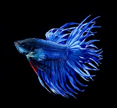
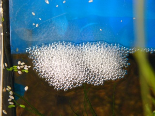
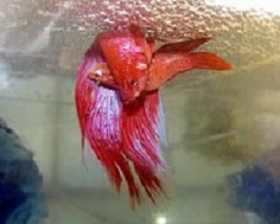
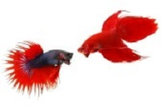

Cycle de vie
Description du poisson sauvage  Combattant femelle variété naturelle Le combattant mesure en moyenne 4 cm de long. La forme sauvage a des nageoires courtes et est de couleur brunâtre.
Habitat et répartition Ce poisson vit dans l'eau stagnante des rizières, des petites mares. Il apprécie les eaux tempérées voire chaudes (24°-28°), lentes et peu profondes. Il est originaire de l'Asie du Sud-Est (Thaïlande, Cambodge, Viêt Nam, Laos et Malaisie).
Alimentation Dans son milieu naturel, le combattant est un prédateur carnivore, il se nourrit de petites proies vivantes.Comme les daphnies.
Comportement et reproduction Le combattant fait partie de la famille des labyrinthidés (actuellement Osphronemidae), c'est-à-dire qu'il possède un labyrinthe qui lui permet de venir respirer l'air en surface. C'est un poisson très territorial, ce qui lui a valu le nom de Combattant du Siam ou simplement Combattant. Les mâles peuvent se montrer très belliqueux entre eux et se livrer à des combats violents, pouvant aller jusqu'à la mort du vaincu. Les femelles sont plus calmes et se tolèrent entre elles. 
Le couple fraie sous un nid de bulles construit par le mâle. Celui-ci enlace la femelle et presse son ventre afin d'en expulser les œufs, tout en en relâchant de la semence dans l'eau pour les féconder. La période de reproduction est stressante et peut fragiliser le mâle et la femelle. Le mâle construit un nid de bulles en choisissant de préférence un endroit où il y a de la végétation.
Lorsque la femelle est prête à pondre, les bandes sur les flancs deviennent verticales, la papille génitale blanche est bien visible, la femelle nage en se dandinant en "S" et baisse la tête, donnant ainsi au mâle le signal que la parade nuptiale peut commencer.
L'accouplement a lieu généralement après une période de courses-poursuites avec de fréquentes morsures aux nageoires. Puis, le mâle va se montrer plus doux et va attirer la femelle sous le nid avant de l'enlacer pour expulser les œufs de son ventre. Les œufs coulent vers le fond et le mâle doit rapidement les récupérer dans sa bouche et placer dans le nid avant que la femelle ne tente de les dévorer. La ponte peut durer trois ou quatre heures, avec de multiples enlacements1
 Dès la fin de l’accouplement le mâle chasse la femelle, considérée (avec raison) comme un danger pour la progéniture. Le mâle s'occupe seul du nid, mangeant les œufs non-fécondés ou morts et prenant soin des autres. Les œufs éclosent au bout de 36-48h d'incubation ; les nouveau-nés vont pendant les 3 à 4 premiers jours après leur éclosion résorber leur vésicule vitelline, incapables de nager, pendus la tête accrochée au nid de bulles et la queue vers le sol. Le mâle veillera sur eux et les récupérera s'ils coulent, jusqu'à ce que les petits atteignent la nage libre et s'éloignent du mâle avant qu'il ne prenne ses enfants pour des proies. Ils s'alimentent à leur tour de menues proies vivantes.
De la 3e à la 6e semaine semaine de leur vie, le labyrinthe (organe de respiration auxiliaire des Osphronemidae) est en pleine formation chez les bébés. Ils sont alors très fragiles aux intempéries extérieures. Après environ trois mois, les différenciations mâles/femelles sont distinctes et les combats pour conquérir leur territoire commencent entre mâles. La durée de vie moyenne d'un combattant (espérance de vie) est de quatre ans et plus. S'il est robuste et dans de bonnes conditions, il peut même vivre jusqu'à environ 8 ans2.
